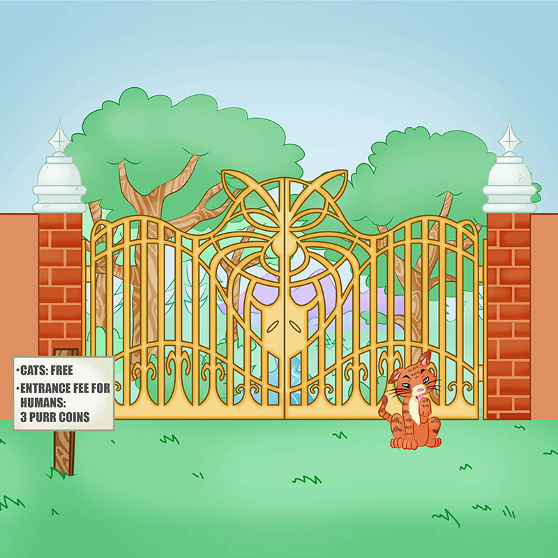

Entrance to Purr City - Free for all cats. 3 purr coins for humans.
How do you get past the Pawkeeper?
You stroke it.
You give it milk
You give it the chicken
No cats were harmed in this production.